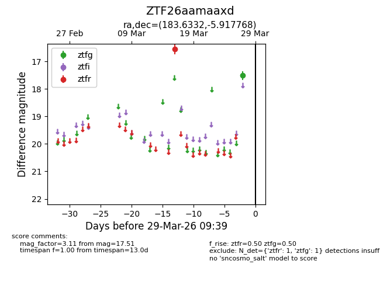
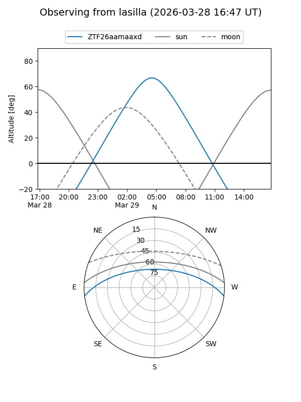
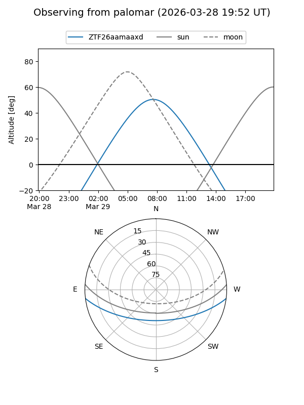

ZTF26aamaaxd
Target ZTF26aamaaxd at 2026-03-29 09:41
Aliases and brokers:
FINK: link
Lasair: link
ALeRCE: link
alt names
ZTF26aamaaxd (ztf,fink_ztf)
Coordinates:
equatorial (ra, dec) = 183.6332,-5.91777
equatorial (HMS+DMS) = 12:14:31.96,-05:55:03.96
galactic (l, b) = (286.4623,+55.76939)
Flags:
Photometry:
last ztfg=17.51, ztfr=16.56
1 ztfg, 1 ztfr detections
Lightcurve

Visibility


Additional plots